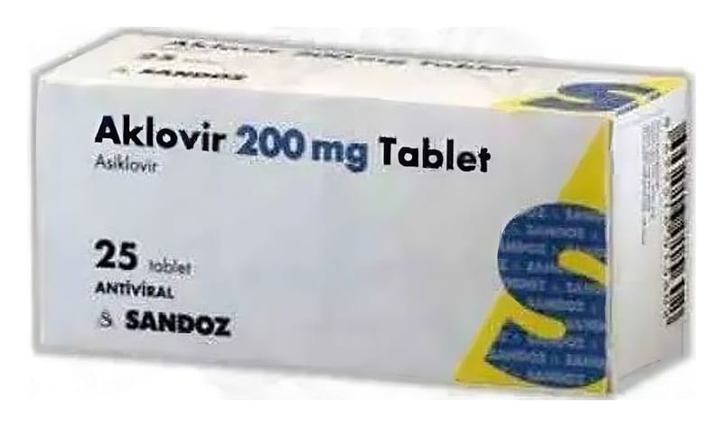

Aklovir 200 mg Tablet, 25 Adet

Ne için kullanılır
KT · Bölüm 1AKLOVİR, Herpes simplex virüs (HSV) ve Varicella zoster virüs virüslerine karşı etkili antiviral bir ilaçtır.
AKLOVİR etken madde olarak asiklovir içerir ve 25 tabletlik blisterlerde sunulmaktadır.
AKLOVİR, uçuk, suçiçeği, zona (sinir iltihabına bağlı ağrılı bir deri hastalığı), genital herpes ve Herpes simplex’in sebep olduğu diğer iltihapların tedavisinde endikedir. Uçuk, genital herpes ve diğer herpes iltihaplarının yeniden görülmesini engeller. Bağışıklık sistemi yetersiz hastalarda Herpes simplex’in neden olduğu iltihabın önlenmesinde kullanılır. AIDS ve kemik iliği naklini takiben ciddi bağışıklık sistemi yetersizliği olan hastaların tedavisinde kullanılır.